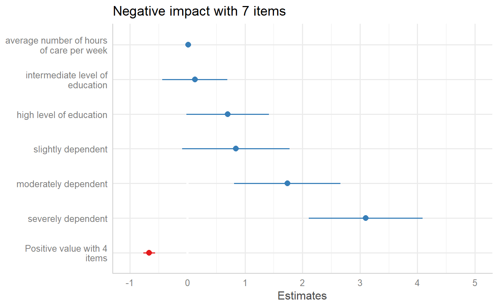
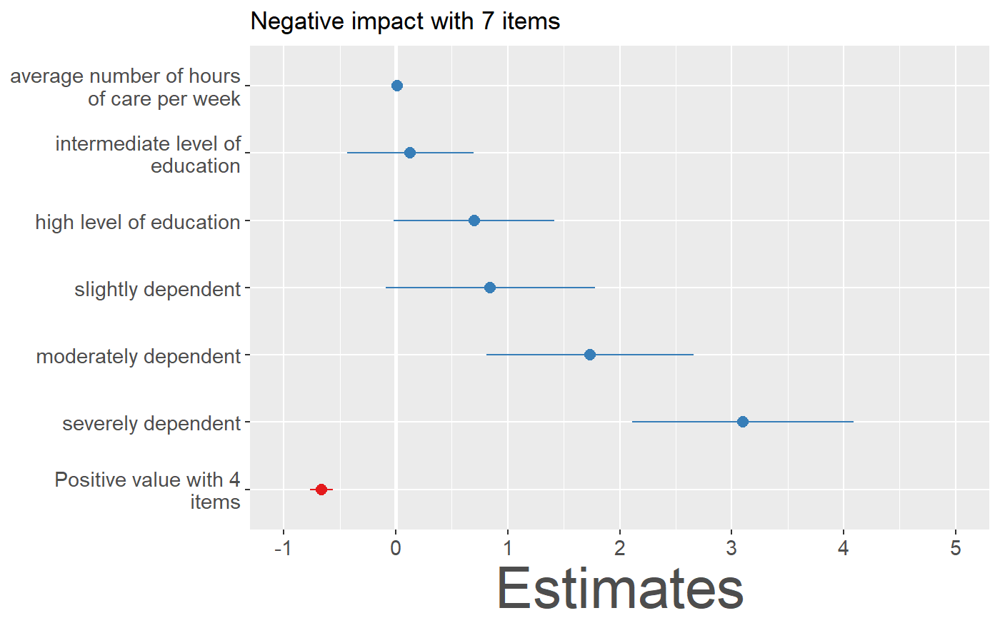
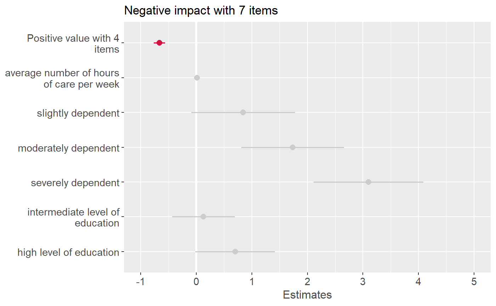
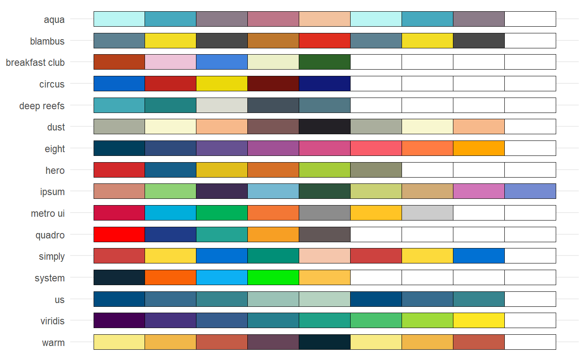

sjPlot-themes.RdSet default plot themes, use pre-defined color scales or modify plot or table appearance.
theme_sjplot(base_size = 12, base_family = "") theme_sjplot2(base_size = 12, base_family = "") theme_blank(base_size = 12, base_family = "") theme_538(base_size = 12, base_family = "") font_size(title, axis_title.x, axis_title.y, labels.x, labels.y, offset.x, offset.y, base.theme) label_angle(angle.x, angle.y, base.theme) legend_style(inside, pos, justify, base.theme) scale_color_sjplot(palette = "metro", discrete = TRUE, reverse = FALSE, ...) scale_fill_sjplot(palette = "metro", discrete = TRUE, reverse = FALSE, ...) sjplot_pal(palette = "metro", n = NULL) show_sjplot_pals() css_theme(css.theme = "regression")
| base_size | Base font size. |
|---|---|
| base_family | Base font family. |
| title | Font size for plot titles. |
| axis_title.x | Font size for x-axis titles. |
| axis_title.y | Font size for y-axis titles. |
| labels.x | Font size for x-axis labels. |
| labels.y | Font size for y-axis labels. |
| offset.x | Offset for x-axis titles. |
| offset.y | Offset for y-axis titles. |
| base.theme | Optional ggplot-theme-object, which is needed in case multiple
functions should be combined, e.g. |
| angle.x | Angle for x-axis labels. |
| angle.y | Angle for y-axis labels. |
| inside | Logical, use |
| pos | Position of the legend, if a legend is drawn.
|
| justify | Justification of legend, relative to its position ( |
| palette | Character name of color palette. |
| discrete | Logical, if |
| reverse | Logical, if |
| ... | Further arguments passed down to ggplot's |
| n | Numeric, number of colors to be returned. By default, the complete colour palette is returned. |
| css.theme | Name of the CSS pre-set theme-style. Can be used for table-functions. |
When using the colors argument in function calls (e.g.
plot_model()) or when calling one of the predefined scale-functions
(e.g. scale_color_sjplot()), there are pre-defined colour palettes
in this package. Use show_sjplot_pals() to show all available
colour palettes.
# prepare data library(sjmisc) data(efc) efc <- to_factor(efc, c161sex, e42dep, c172code) m <- lm(neg_c_7 ~ pos_v_4 + c12hour + e42dep + c172code, data = efc) # create plot-object p <- plot_model(m) # change theme p + theme_sjplot()# change font-size p + font_size(axis_title.x = 30)# apply color theme p + scale_color_sjplot()#> #># show all available colour palettes show_sjplot_pals()# get colour values from specific palette sjplot_pal(pal = "breakfast club")#> [1] "#b6411a" "#4182dd" "#2d6328" "#eec3d8" "#ecf0c8"